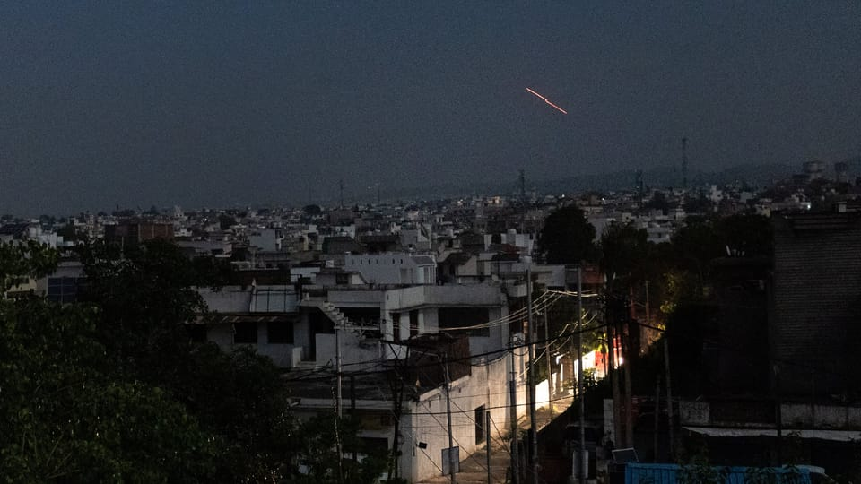

世界苦茶05月10日新闻 | 50条 | 印巴冲突升级到双方攻击对方正规军基地程度

印巴冲突升级到双方攻击对方正规军基地程度 | 中国4月官方进出口数据意外强劲 | 俄罗斯举办胜利日阅兵 | 美国可能承认巴勒斯坦建国
三个水枪手
苦茶数据
美元兑人民币：7.24（昨日7.24，前日7.23）
美元兑日元：144.98（昨日145.59，前日143.56）
上证指数：休市（昨日3342，前日3342）
标普500指数：休市（昨日5659，前日5663）
比特币：103432（昨日102608，前日98566）
布伦特原油：63.91（昨日63.20，前日61.43）
印巴冲突
• 巴基斯坦军方5月10日宣布对印度多个地点进行报复性袭击： 袭击的目标包括位于伯坦果德和乌坦布尔的空军基地以及导弹存储设施，已通过网络攻击使印度70%的电网瘫痪。总理夏巴兹召集全巴所有政党领导人和军队领导人召开“国家指挥当局”紧急会议。稍早前，巴基斯坦军方证实，印度5月10日向位于拉瓦尔品第的努尔·汗空军基地、杰格瓦尔的穆里德空军基地、吉航的拉菲克空军基地发射导弹。部分导弹被拦截，空军设施安全。此外，部分导弹落入印度本土和阿富汗。发言人称，这是最高级别的挑衅。印度方面尚未公开置评。一名印度官员称，印军正对巴基斯坦的袭击做出适当回应。 （翻评：双方已经升级到攻击对方政府军队的地步，那么下一步的关键就是双方是否会越过LoC进行攻击了。）
• 因大量地下出口乌克兰，巴基斯坦在印巴紧张局势中弹药短缺： 在可能与印度发生冲突的背景下，巴基斯坦因据称向乌克兰和以色列大量地下出口军火而陷入严重的火炮弹药短缺，印度媒体援引情报消息人士报道称。此次火炮短缺正值克什米尔印控区帕哈尔甘姆地区4月22日遭遇袭击之后，局势升级。
• 美国国务卿马可·卢比奥敦促巴基斯坦总理谢赫巴兹·谢里夫停止支持恐怖组织： 在印巴紧张局势升级之际，美国、欧盟、伊朗和沙特均呼吁双方缓和局势并对话。美国国务卿卢比奥与两国外交官通话，而印度外交部长苏杰生则重申印度将坚决反击任何来自巴基斯坦的升级行为。尽管全球呼吁克制，但印度仍强调其对跨境恐怖主义的回应是“有节制的”。美国方面通话纪要显示，卢比奥鼓励双方继续加强沟通，而苏杰生随后在X平台（原推特）上表示他告诉卢比奥，印度将坚决回应巴基斯坦的任何升级行为。
• “宗教学校学生是我们的第二道防线”：巴基斯坦防长在对印对峙中表态： 随着印巴关系日趋紧张，巴基斯坦国防部长卡瓦贾·阿西夫于5月9日星期五在议会发言中宣布，宗教学校学生在需要时将作为国家的第二道防线。他表示：“关于宗教学校或其学生，我毫不怀疑，他们是我们的第二道防线，是正在学习的青年。当需要时，他们将百分之百被派上用场。”
• 巴基斯坦军方发言人：我们不会与印度“缓和局势”： 巴基斯坦军方发言人艾哈迈德·谢里夫·乔杜里于5月9日在记者会上表示，巴方不会与印度“缓和局势”，尽管近日两国之间发生了导弹、火炮和无人机袭击。“我们不会缓和局势——印度在我们这边造成了损失，他们也应受到打击。”乔杜里表示。“目前为止我们一直在防守，但我们将在适当时机予以回应。”
• 巴防长称“除了全面战争，别无选择”，印巴局势持续升级： 巴基斯坦防长阿西夫于5月9日在接受巴基斯坦电视台采访时表示，面对印度过去四天“日益激进的姿态”，伊斯兰堡“除了全面战争之外已无其他选择”。阿西夫称：“我们没有其他选择……我们必须以其人之道还治其人之身。”当主持人问“战争是否已到门口？”时，他回答：“绝对如此，对此不应有任何怀疑……”。 （翻评：这个可以不着急，因为可能每天说法都不一样。昨天就是这个人说不会升级。）
• 印度称如巴方回应将保持“不升级立场”： 印度称，其空袭目标为巴基斯坦在旁遮普邦的多个空军基地，是在巴方向印度空军基地发射高速导弹后做出的反应。印度方面重申，如巴方也选择克制，印方将坚持不扩大冲突。
• 巴基斯坦宣布对印度展开“军事行动”，核指挥小组召开会议： 巴基斯坦声明称，针对印度持续的“挑衅”——其向巴基斯坦三个空军基地发射导弹——巴方展开了报复性打击。巴军方表示，使用“Fateh”中程导弹攻击了25个以上军事目标，包括位于古吉拉特、旁遮普、拉贾斯坦邦和印控克什米尔的空军基地和武器库。印度军方则在X平台上回应称，巴基斯坦“通过无人机和其他弹药公然升级冲突”，但其攻击“被空防系统迅速发现并击落”。巴方军方还在X上发布了导弹从移动发射平台发射的视频。
中国新闻
• 象棋特大王天一受审 ：有“中国象棋第一人”之称的象棋特级大师王天一，因涉嫌受贿罪受审。综合《中国体育报》和《北京日报》报道，浙江省杭州市上城区法院星期五对王天一等非国家工作人员受贿罪进行了公开审理。中国象棋协会有关负责人表示，协会坚决支持司法机关依法打击涉象棋行业的违法行为。相关方面严肃查处象棋领域违纪违法案件，有力释放了反腐败无禁区、全覆盖、零容忍的强烈信号。协会对任何形式的损害公平比赛的行为秉持零容忍态度。
• 河南省长调研蜜雪冰城 ：在中共总书记习近平提出促进消费的论述后，中国各地主政官员纷纷调研促消费工作，河南省长王凯对总部位于郑州的中国最大冰淇淋与茶饮品牌蜜雪冰城进行了调研。据《河南日报》报道，王凯星期四在郑州调研促消费工作，强调要深入贯彻落实习近平关于促进消费的论述，大力实施提振消费专项行动，优化消费供给，释放内需潜力，持续增强消费对经济增长的拉动作用。报道称，经过多年发展，蜜雪冰城门店数量已居全球现制饮品企业首位。王凯来到企业总部，走进旗舰店、实验室、体验馆，与企业负责人、消费者交谈，详细了解生产经营、新品研发和消费体验等情况。
• 港律政司倡调解枢纽地位 ：香港律政司司长林定国说，香港具备成为“调解之都”的条件，应发展成为连接全球各方的世界级调解枢纽。综合香港01和星岛网报道，香港律政司星期五举办“调解为先”承诺书签署活动，超过1000名承诺人签署承诺书，涵盖法律、争议解决、商业、教育和保险等行业。林定国在致辞中指出，香港秉承“以和为贵”的中华文化传统，无论在国际或本地层面，调解服务皆优先被视为解决争议的理想方式。
• 西安机场新楼雨漏成灾 ：中国陕西省会西安遭遇冰雹天气，刚启用不到三个月的机场新搭客大厦多处漏雨，成了“水帘洞”。综合极目新闻和红星新闻报道，西安周边星期四晚7时左右出现冰雹天气，伴有闪电、短时强降水及短时大风。位于咸阳市渭城区的西安咸阳国际机场，距离西安市区约20公里，其中第五搭客大厦受到此次天气影响，出现多处漏雨情况。
亚太印太新闻
• 朱立伦言论惹议被批 ：台湾在野的国民党主席朱立伦以纳粹领袖希特勒类比总统赖清德引发关切后，国民党籍台北市长蒋万安在议会接受质询时认为，朱立伦的言论不恰当。综合台湾《联合报》《自由时报》报道，朱立伦星期五接受议员质询问，被民进党议员问到朱立伦是否失言，是否需要道歉。蒋万安回应时说，“我认为并不恰当”，但据报也点名民进党籍高雄市长陈其迈称，“有民进党政治人物、南部县市首长讲过，也一样要被检验”。
• 黄国昌称军营用陆资设备 ：台湾在野民众党主席黄国昌指台湾军营内使用了中国大陆制造的资通设备，并将于适当时机公布细节。综合台湾《联合报》《中国时报》报道，黄国昌星期五早上透露，近日接获检举，指军营内出现中国大陆制的资通设备，他已前往相关军事基地查证，并确认情况属实。黄国昌说，目前尚未对外公开相关内容，计划在适当时机于立法院委员会质询时提出。
• 韩朝去年零交流 ：根据韩国统一部星期五发行的《2025统一白皮书》，2024年韩朝之间没有人员和贸易往来。韩联社报道，《2025年统一白皮书》记录了去年韩朝统一、对朝政策推进情况和韩朝关系现况。白皮书指出，韩国政府去年坚持坚决应对朝鲜挑衅的原则。由于朝鲜不断违反韩朝之间的各项协议，2023年11月单方面宣布废除韩朝《九一九军事协议》，政府2024年中止《九一九军事协议》全部条款的效力。由此，韩军可在军事分界线一带重启军事训练，针对朝鲜挑衅可及时采取相应措施。白皮书另行开辟章节记述韩国政府为重启韩朝对话付出的努力，比如前总统尹锡悦在光复节纪念活动上发表讲话提议设立韩朝对话协商机制，政府努力恢复韩朝联络渠道。白皮书还提及，政府曾提议向朝方提供抗击洪灾援助，但朝方自始至终未作回应。
• 韩国法官拟开会谈中立 ：韩国全国法官代表将召开临时会议，讨论涉及政治中立和司法公信的问题。具体会议日程和议题待定，但有观点认为，会可能就大法院日前将共同民主党总统候选人李在明涉违反选举法案发回重审引发的争议进行讨论。韩联社报道，韩国全国法官代表会议星期五宣布召开临时会议，并表示超过五分之一的成员以有必要讨论法院“政治中立”被质疑、司法公信力受损等问题为由，要求召开临时会议梳理立场。据悉，全国法官代表会议内部对是否召开临时会议及会议议题展开激烈讨论。有意见指出，最高法院破例迅速审理李在明的案件，引发未遵守政治中立的质疑，代表会议应对此表达遗憾。另有意见认为，会议应指出，共同民主党公开要求最高法院院长曹喜大辞职并推进举行听证会，有侵犯司法机关独立性之嫌。
• 台立院新增5个假日 ：台湾，立法院5月9日三读通过《纪念日及节日实施条例》增加国定假日至16天。新增的放假日是：小年夜、五一劳动节、928教师节、1025台湾光复暨古宁头大捷日、行宪纪念日。
科技新闻
• 苹果正研发M6/M7芯片 ：苹果正在开发包括 M6 和 M7 在内的多款芯片。其中，代号为“Hidra”的M4 Hidra似乎也正在研发中，但目前未知是否计划在未来推出。此外，苹果正在试验内部解决方案，其 CPU 和 GPU 核心数量将是配备了32核 CPU 和 80 核 GPU 的 M3 Ultra 的两倍、四倍甚至六倍，假设苹果公司在开发过程中没有遇到任何障碍，我们有望见证前所未有的计算和图形处理能力，以及设备上AI性能的提升。
• B站否认占用用户CPU ：近期，有网友发帖称，B站拿用户CPU当自家分流工具，自己在电脑上用Chrome浏览器看B站时经常卡顿，声称安装屏蔽插件后，效果立竿见影，“一分钟不到拦截了数百个 B 站暗链。”哔哩哔哩今日对此进行辟谣，哔哩哔哩表示，其在PC端会按照行业通行规则，收集部分使用B站的基础行为数据，以优化产品功能、改善体验，单条信息大小不超过1KB，不会对电脑运行效率造成影响，也不存在占用资源达到其他目的的行为。经查，该第三方插件拦截信息收集时，会导致系统尝试重复上报，因此造成了高频收集的误解。
• 港扩大萝卜快跑测试范围 ：香港特别行政区运输署根据《道路交通（自动驾驶车辆）规例》更新自动驾驶车辆试行牌照，并扩展北大屿山自动驾驶车辆测试路线。萝卜快跑在港测试区域再扩大，每次道路测试的车辆也由五辆增加至十辆。香港运输署发言人表示，萝卜快跑自2024年12月起在北大屿山进行道路测试至今，在不同道路场景中表现稳定，已达到高度自动化驾驶水平。这意味着，萝卜快跑能够在特定运行条件下持续执行所有动态驾驶任务，并自动执行最低风险策略，技术水平与内地及世界其他地区相当。
• 维基挑战英在线安全法规 ：维基媒体基金会正在法庭上挑战英国的在线安全法规，担心这些规定可能导致其维基百科平台上的 “破坏行为、虚假信息或滥用” 行为得不到遏制。维基媒体周四宣布，其法律挑战专门针对《在线安全法案》的分类规定，基金会表示这些规定措辞宽泛，足以使维基百科承担网站可能面临的最严格义务。OSA是2023年通过的安全法规，旨在保护儿童和成人免受有害在线内容的侵害。维基媒体基金会首席法律顾问施米格说，强制执行第一类义务将损害维基百科志愿者的隐私与安全，并可能使用户面临数据泄露、跟踪、恶意诉讼甚至专制政权监禁的风险。
• 马斯克的星链在印度获得预期的国家批准： 一位高官证实，印度电信部周三批准了星链开始在这个南亚国家开展合规工作。星链现在必须提交文件以证明其符合许可要求。本周早些时候，新德里发布了针对全球卫星移动个人通信运营商的规定，为包括星链、亚马逊 Kuiper 等公司制定明确的安全指南。其中一些规定将帮助印度政府审查内容并拦截流量，就像其可对地面网络运营商所做的那样，并限制用户终端“从地理围栏覆盖区域外和/或通过位于印度境外的网关” 进行访问。卫星公司需遵守这些规定才能在该国运营。SpaceX还需要获得 IN-SPACe 的批准，才能提供基于卫星的通信服务。
财经新闻
• 萨默斯警告新台币升值 ：美国前财长萨默斯认为，台湾是美国金融资产的重要投资者之一，新台币的大幅升值可能预示着美国面临资本流入放缓的风险。新台币在星期一录得自1988年以来最大单日升幅。虽然具体原因尚未完全明朗，但市场人士普遍认为，有可能是台湾政府有意让新台币升值，让台湾能与美国总统特朗普达成贸易协议。萨默斯在接受彭博电视《华尔街一周》节目采访时说，新台币的大幅升值“凸显了我们在应对资本流入与贸易逆差方面所面临的更深层挑战”，“单从数学角度来看，若不削减流入美国的海外资本，我们就不可能彻底解决贸易逆差的问题”。
• 智联招聘暂停薪资发布 ：中国最大在线招聘平台之一智联招聘已悄然停止发布其持续十余年的薪资数据，在美国加征关税、中国就业压力上升的背景下，这使外界更难评估全球最大劳动市场的真实状况。据彭博社报道，总部位于北京的智联招聘，已连续两个季度没有发布其追踪全国38个主要城市新入职员工平均工资的报告。按往年惯例，该平台通常会在季度结束后的一个月内公布相关数据。这项数据没有如期发布，反映出中国近年来在统计数据披露方面日益收紧的趋势。尤其在就业领域，能够替代官方数据的独立指标日渐稀缺，令分析师和投资者难以掌握一个日益敏感的现实：青年失业高企、企业普遍降薪、裁员现象的持续蔓延。 （翻评：中国新闻数据停止公开大潮中的一个。）
• 松下宣布全球裁员万人 ：松下控股公司宣布，计划在全球范围裁减1万个职位，以提升盈利能力，削减非增长业务。总部位于日本大阪的松下控股星期五指出，此次裁员计划将在本财年内实施。裁减目标包括在日本国内的5000名员工，以及海外合并子公司的5000名员工。公司预计，截至明年3月，人员重组相关支出，将达约1300亿日元。
• 中阿签农产采购意向书 ：知情人士透露，中国已与阿根廷出口商签订合同意向书，以采购9亿美元的大豆、玉米和植物油。此举显示为规避美国施加的关税，中国正让农产品采购趋于多元化。彭博社引述两名匿名知情人士称，中国官员星期三在布宜诺斯艾利斯签署上述不具约束力的协议。阿根廷《号角报》最先报道这则消息。
• 中国出口强劲进口趋稳 ：官方数据显示，中国出口总值同比增幅在4月超出市场预期，进口跌幅则收窄。其中，对美国出口大跌，对亚细安和欧盟则上升。中国海关总数星期五在官网公布，以美元计算，出口总值在4月为增加8.1%，远超出接受路透社调查的经济师所预测的1.9%，3月为12.4%。进口总值从3月的负4.3%，收窄至4月的负0.2%。经济师早前预测的是负5.9%。 （翻评：说实话，这个数据我觉得可能有点水分，或者说有4月特殊的情况，尤其是进口部分。值得进一步分析。）
• 美称日韩贸易协议尚远 ：美国商务部长卢特尼克表示，美国与韩国和日本谈判贸易协议所需要的时间，可能远超过特朗普总统星期四宣布与英国达成的贸易框架协议。这显示美国的一些亚洲伙伴要获得关税减免可能需要等上一段时间。卢特尼克在接受彭博社采访时说：“我们与日本和韩国的谈判需要花费大量时间。这些协议不会很快达成。”另一方面，他指印度一直“非常积极谈判”，因此印度“绝对”有可能成为下一个与美国达成协议的国家之一。但他也警告说：“我们还有大量工作。”
• 中芯国际预计收入下滑 ：中国晶片代工领头羊中芯国际联席首席执行官赵海军在今年一季度业绩说明会上说，二季度收入预计环比下降4%至6%，毛利率下降18%至20%。综合第一财经和蓝鲸新闻等报道，赵海军星期五在上述说明会上表示，由于工厂生产性波动，今年一季度后半期平均销售单价下降，导致收入未能达到指引预期，这一影响将延续到二季度。他也提到二季度收入将出现下滑。中芯国际港股星期五开市一度下跌11%，为一个多月的单日最大跌幅。截至目前，中芯国际港股股价收跌至每股42.85港元，跌幅5.09%。
• 六成欧企称在华更难做 ：中国欧盟商会的一份调查显示，有近六成欧洲企业称，今年在华营商环境更具挑战。据彭博社报道，中国欧盟商会星期四发布的调查显示，59%受访企业称，自今年初以来，在华营商环境变得愈发艰难。中国欧盟商会在4月17日至27日进行上述调查，收到超过150家企业的回复，以了解外企在应对关税战时的感受。有近半数企业称，他们受中国对美商品加征关税的影响，少于三分之一企业则说，美国对中国商品加征关税影响他们在华出口业务。
• 京东公布最严外卖标准 ：京东今日通过公众号宣布，京东首创了外卖行业的最严准入标准，入驻审核通过率仅四成。举措上，包括照片复检、定期巡检、视频验真等。京东表示，极个别不符合标准的商家，绞尽脑汁，妄图混入。现邀请全民监督，以赶走漏网之鱼。若以后发现不符合标准的 “无堂食餐厅” 混入，可通过扫描二维码或通过商家门店页右上角 “问题反馈” 入口反馈。反馈将会有专人跟进，一经核实，立即对商家进行下线处理。核实下线后，用户还将获得四十元京东饭卡。“无堂食餐厅” 指的是不面向线下经营的纯外卖店，不含咖啡茶饮、熟食卤味、蛋糕甜点、品牌即提等。
• 特朗普发文促中开放市场 ：特朗普5月9日清晨发文：“中国要对美国开放市场，这对他们很有好处！封闭市场行不通了！”“对华关税收80%挺对的！贝森特来定。”贝森特是中美经贸谈判美方牵头人，即将与何立峰在瑞士会面。
俄乌战争
• 普京出席胜利日阅兵 ：俄罗斯举行纪念卫国战争胜利日阅兵仪式。俄罗斯塔斯社报道，俄罗斯纪念卫国战争胜利80周年阅兵式星期五在红场举行，总统普京在中央观礼台发表讲话，向俄罗斯人致以节日问候，缅怀俄罗斯先辈的英勇事迹，并宣布为阵亡将士默哀一分钟。今年有来自13个国家的阅兵方队出席仪式，包括中国、白罗斯、越南、埃及、哈萨克斯坦。普京此前称，中国方队是所有外国方队中规模最大的。中国国家主席习近平当天出席典礼。
• 俄阅兵首展战争无人机 ：俄罗斯在胜利日阅兵式上，首次展示在乌克兰战争中使用的战斗无人机。路透社报道，俄罗斯纪念卫国战争胜利80周年阅兵式星期五在莫斯科红场举行。接受检阅的不仅有俄军各种军事装备，还有俄罗斯制造的无人机。俄国家电视台说，这是俄罗斯首次展示用于俄乌战争的无人机。俄国家电视台在实时转播阅兵式时说，这些无人机广泛且有效地用于俄罗斯对乌克兰的“特别军事行动”。
• 欧盟拟设法庭审俄侵乌罪 ：欧盟国家外交部长支持设立一个特别法庭，审判俄罗斯领导人入侵乌克兰的罪行。法新社报道，欧盟成员国外长星期五在乌克兰西部城市利沃夫举行会议，支持设立用于审判俄罗斯高层领导的特别法庭。欧盟外交与安全政策高级代表卡拉斯说：“有罪不罚是不可能的。俄罗斯的侵略不能不受惩罚，因此设立这个法庭极为重要。”海牙国际刑事法院已对俄罗斯总统普京和其他俄罗斯官员发出逮捕令，指控他们强制驱逐儿童，以及袭击乌克兰能源目标，但国际刑事法院无权对俄罗斯入侵乌克兰这一根本性决策进行审判。
• 朝俄军火合作或加深 ：韩军星期五研判，朝鲜领导人金正恩近期三度视察600毫米级超大口径火箭炮生产和测试现场，或与对俄武器出口有关。朝鲜已向俄罗斯提供相关武器。韩联社报道，韩军相关人士指出，韩国军方研判，继170毫米口径自行火炮和240毫米口径火箭炮后，朝鲜已向俄罗斯提供超大口径火箭炮。俄罗斯希望朝鲜提供被称为朝版“伊斯坎德尔”的KN-23和KN-25等短程弹道导弹，而朝方KN-25库存数量可能相对更充足。本月以来，金正恩已三次公开进行与KN-25火箭炮有关的军事活动，包括星期天视察坦克厂、星期三视察第二经济委员会所属的重要军工企业和星期四指导远程炮及导弹系统联合打击训练。
• 金正恩5月9日携“最心爱的女儿”赴俄罗斯大使馆，祝贺俄伟大卫国战争胜利日： 消息是以朝鲜外务相崔善姬名义对外发布的，她形容现在的朝俄关系是“真正的战友关系、百年大计之战略关系”，强调“平壤和莫斯科始终站在一起”。
• 普京阅兵讲话回应美言论 ：俄罗斯总统普京在胜利日阅兵式上发表讲话，强调“真理和正义都在我们这边”。《莫斯科时报》报道，俄罗斯纪念卫国战争胜利80周年阅兵式星期五在莫斯科红场举行，普京发表约10分钟的演讲。普京抨击“诋毁第二次世界大战真正胜利者”的企图。报道称，此举可能是在回应美国总统特朗普本周早些时候的言论，特朗普声称美国在“取得胜利方面比任何其他国家做得都多”。
• 日批中俄指责反批军事动员 ：针对中俄联合声明指日本应在靖国神社等历史问题上谨言慎行，同军国主义彻底切割，日本内阁秘书长官林芳正反批两国军事动向引发国际关切，“不要沉醉于对他国的批评之中”。据新华社报道，俄罗斯总统普京星期四与到访的中国国家主席习近平举行会谈，并签署深化全面战略协作伙伴关系的联合声明。联合声明中提到，第二次世界大战是人类历史上的一场空前浩劫。中国和苏联分别作为亚洲和欧洲主战场，站在抵御日本军国主义和纳粹德国及其仆从国进攻的最前线，是抗击军国主义和法西斯主义的两支中坚力量。
• 中俄联手应对美双遏制 ：中俄两国星期四发布联合声明，强调中俄将加强协调配合，坚决应对美国对中俄实施双遏制。至于俄乌战争课题，双方提出在完全遵循《联合国宪章》原则基础上，消除危机根源。据新华社报道，俄罗斯总统普京当天同中国国家主席习近平在莫斯科克里姆林宫举行会谈。两国元首之后共同签署《中华人民共和国和俄罗斯联邦在纪念中国人民抗日战争、苏联伟大卫国战争胜利和联合国成立80周年之际关于进一步深化中俄新时代全面战略协作伙伴关系的联合声明》。根据新华社发布的声明内容，中俄点名美国及其盟友，指它们企图推进北约东进亚太，在亚太地区大搞小圈子，拉拢本地区国家推行其印太战略，破坏地区和平稳定繁荣。
• 台陆委会驳中俄抗战说 ：台湾政府的大陆委员会发文反驳中俄联合声明里关于二战历史和台湾地位的内容，指中国共产党对抗日战争无实质贡献，而是借机扩张。据台陆委会星期五在官网发布的新闻稿，针对大陆与俄罗斯元首会晤并签署联合声明称“二战中国战场胜利是在共产党的领导下取得的”及”台湾是中华人民共和国不可分割的一部分”等内容，陆委会表达严正抗议与谴责。陆委会表示，中华民国政府与全体军民在抗日战争中付出无数牺牲奉献，共同反侵略、护家园，最终取得抗战胜利，对二战的成功具有重要历史意义；中共仅借机扩张、巩固共产势力，对抗战并无实质贡献，更遑论“领导”抗战。
• 英制裁百艘俄油轮 ：在欧洲安全联盟即将举行会议之际，英国宣布对多达100艘俄罗斯油轮实施制裁，以惩罚俄罗斯入侵乌克兰的行为。路透社报道，英国表示，这些油轮是协助俄罗斯运输石油的影子船队的一部分，自去年年初以来已运载价值超过240亿美元的原油，其中一些油轮还参与了对乌克兰关键基础设施的破坏。英国首相斯塔默办公室说，这将是英国针对俄罗斯影子舰队祭出的最大规模一揽子制裁措施。
• 伊朗将交付导弹发射器 ：两名西方安全官员和一名地区官员透露，伊朗正准备向俄罗斯交付法塔赫-360短程弹道导弹的发射器。美国官员说，伊朗已在去年向俄方交付这种短程弹道导弹。美国去年9月表示，伊朗用九艘悬挂俄罗斯国旗的船只向俄罗斯运送了法塔赫-360导弹，并对这些船只实施制裁。当时三名消息人士告诉路透社，伊朗运送这批导弹时并未包括发射器。路透社星期五引述西方安全官员和不愿具名的地区官员说，伊朗即将向俄罗斯交付法塔赫-360导弹发射器。他们拒绝提供有关移交的更多细节，包括为什么伊朗没有在去年交付导弹时一起交付发射器。
• 乌克兰逮捕匈牙利间谍网络，称其在扎卡尔帕蒂亚州从事情报活动： 乌克兰安全局于5月9日宣布，已捣毁一个在扎卡尔帕蒂亚州活动的匈牙利军事情报网络，并逮捕两名涉嫌对乌克兰进行间谍活动的特工。SBU称，这是乌方首次识破针对乌克兰国家利益展开活动的匈牙利情报网络。据称，该行动旨在获取乌军防御情报，发现地面和空中防御系统的漏洞，并评估当地居民的社会政治态度，尤其是在匈牙利军队可能进入该地区时的反应。匈牙利总理欧尔班·维克托被广泛视为欧盟中最亲莫斯科的领导人，曾多次反对对乌军事援助，认为西方支持只会延长战争。扎卡尔帕蒂亚州位于北约东部边界，是一个拥有大量匈牙利族裔的敏感地区，基辅长期以来指责布达佩斯通过政治干预和双重国籍计划削弱乌克兰主权。
其他新闻
• 胡塞导弹袭击以机场 ：胡塞武装组织向以色列本-古里安国际机场发射导弹。法新社报道，以色列军方星期五发布声明说，当天拦截一枚从也门发射的导弹。此前以色列多个地区响起防空警报，法新社记者听到耶路撒冷地区传出爆炸声。胡塞武装组织发言人随后宣称，胡塞武装使用高超音速弹道导弹，对以色列中部城市特拉维夫的本-古里安国际机场发动袭击，并在同一地区对一个以色列关键目标发动无人机袭击。
• 美加沙援助计划引担忧 ：美国提出的加沙援助物资分发计划引起援助界担忧。美国驻以色列大使赫卡比说，以色列和哈马斯均不会参与物资分发，但以色列会参与当地安全保障工作。美国国务院星期四表明，向加沙运送粮食援助的解决方案预计很快就会出炉。华盛顿尚未公布相关计划的具体措施，但路透社引述一份在援助界散发的文件报道，相关方案包括为最近成立的加沙人道主义基金会设立四个“安全分发点”，每个分发点可服务近30万人。
• 伊朗外长将访沙特卡塔尔 ：伊朗外交部长阿拉格齐将在美国总统特朗普开始中东之行前，对沙特阿拉伯和卡塔尔进行访问。法新社报道，阿拉格齐定于星期六访问沙特阿拉伯和卡塔尔。伊朗外交部发言人巴格伊说，阿拉格齐将在利雅得与沙特高级官员会谈，随后前往多哈参加阿拉伯—伊朗对话会议。目前尚不清楚利雅得会谈的具体课题。
• 丹麦抗议美在格陵兰间谍 ：丹麦外交部长拉斯穆森召见美国驻丹麦使馆临时代办戈弗雷，强调丹麦“不能容忍”美国的间谍活动。新华社报道，丹麦外交部星期四在一份声明中说，丹美双方讨论的焦点是美国《华尔街日报》星期二刊发的一篇有关美国情报机构将加强对格陵兰岛间谍活动的报道。格陵兰岛自治政府的一名代表也参加会议。拉斯穆森在会后向媒体说，丹麦向戈弗雷明确表达自身立场：“我们是美国的盟友，因此不能容忍间谍活动。”他还说，他尚不能证实《华尔街日报》报道的准确性，“此次召见的目的是向美方表明我们对报道内容的高度重视”。
• 良十四世就职弥撒将举行 ：新任罗马天主教教宗良十四世的就职弥撒，定于5月18日举行。法新社报道，梵蒂冈星期五宣布，第267任罗马天主教教宗良十四世的就职弥撒定于5月18日举行。预计世界各国领导人将出席此次活动。良十四世于星期四当选新任教宗，成为首位来自美国的罗马天主教教宗。他星期五早些时候在梵蒂冈西斯廷教堂主持首次弥撒。他先用英语简短致辞，之后用意大利语继续讲话，描绘他对天主教会蓝图的愿景，并表示会致力于成为整个教会的忠实管理者。
• 海湾外交消息人士称特朗普将宣布美国承认巴勒斯坦国： 沙特阿拉伯将于5月中旬主办一次海湾国家与美国的峰会，这是美国总统唐纳德·特朗普在其第二任期内首次访问沙特。此次峰会延续了特朗普在其第一任期中于2017年5月21日访问沙特时召开的类似会议。此次由沙特在首都利雅得主办的峰会之前，外界已有诸多猜测，称特朗普将在此次峰会中宣布他在5月6日与加拿大总理特鲁多在白宫会面时所提到的“非常重要的声明”。除了特朗普即将宣布的内容外，峰会的议题以及预计将达成的各类协议和交易也引发热议，涵盖安全、军事、科技以及人工智能等领域。